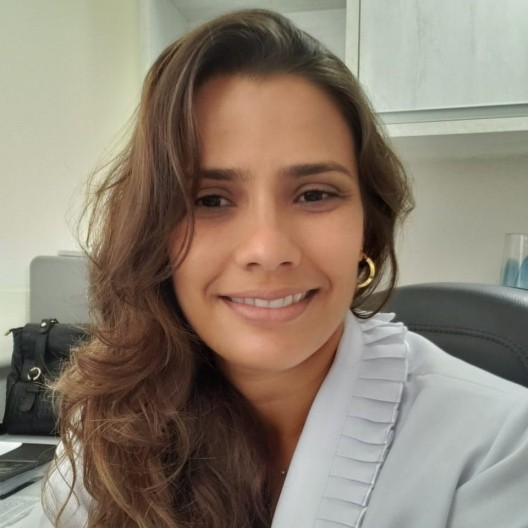

Início · Sobre
Dra. Mariana Andrade Carvalho.
Coloproctologista em Salvador, CRM-BA 18757, com título de especialista pela Sociedade Brasileira de Coloproctologia (2012). Também cirurgiã geral, com residência no Hospital Santo Antônio.
Apresentação
Quem é

A Dra. Mariana atende no consultório da CLIMAJ, no Itaigara, e atua como coloproctologista no Hospital da Bahia e no Hospital Mater Dei Salvador, segundo o CNES.
Cuida de doenças do ânus, do reto e do intestino grosso: hemorroidas, fissuras, fístulas, intestino preso, incontinência fecal e prolapso retal. Realiza colonoscopia e atua em cirurgia colorretal por videolaparoscopia e em cirurgia oncológica do cólon, reto e ânus.
Registro
Registro e título
CRM-BA 18757
Registro no Conselho Regional de Medicina da Bahia.
Título de especialista · 2012
Aprovada no concurso para o título de especialista da Sociedade Brasileira de Coloproctologia de 2012.
Coloproctologista no CNES
Cadastrada como médica coloproctologista desde julho de 2013.
Também cirurgiã geral
Residência em Cirurgia Geral no Hospital Santo Antônio, de 2008 a 2010 (CNES).
Fontes: Informativo SBCP nº 131, perfil na Doctoralia e CNES.
Nas palavras dela
Formação
“Possui graduação em Medicina pela Escola Bahiana de Medicina e Saúde Pública (2001-2006), Residência Médica em Cirurgia Geral pelo Hospital Santo Antônio (HSA 2008-2009), Especialização em Coloproctologia pelo Hospital Heliópolis de São Paulo (HH-SP 2010-2011), Especialização em Cirurgia Vídeo Laparoscópica Colorretal pela Fundação Pio XII - Hospital do Câncer de Barretos-SP (2012). Observership na Cleveland Clinic Ohio - EUA (2019). Membro Titular da Sociedade Brasileira de Coloproctologia e Sociedade Brasileira de Videolaparoscopia.”
Texto da Dra. Mariana no perfil da Doctoralia · ver na Doctoralia
- 2001–2006 · Escola Bahiana de Medicina e Saúde PúblicaGraduação em Medicina.
- 2008–2010 · Hospital Santo AntônioResidência em Cirurgia Geral (ela informa 2008-2009; o CNES registra de 10/2008 a 05/2010).
- 2010–2011 · Hospital Heliópolis, São PauloEspecialização em Coloproctologia.
- 2012 · SBCPTítulo de especialista em Coloproctologia.
- 2012 · Fundação Pio XII, BarretosEspecialização em cirurgia videolaparoscópica colorretal (CNES: 03/2012 a 05/2013).
- 2019 · Cleveland Clinic, Ohio (EUA)Observership, segundo o texto dela.
Ela também se apresenta como membro titular da Sociedade Brasileira de Coloproctologia e da Sociedade Brasileira de Videolaparoscopia.
Atuação
Hospitais
Hospital da Bahia
Coloproctologista desde fevereiro de 2016.
Hospital Mater Dei Salvador
Coloproctologista desde setembro de 2024.
Vínculos do CNES, competência 10/2026.
Áreas
Áreas de atuação
Lista declarada no perfil da Doctoralia.
Consulta
O jeito de atender
Nas respostas públicas, ela escreve simples e direto, do jeito que fala com o paciente:
“Não podemos falar em cura e sim controle dos sintomas. Normalmente quando o paciente faz uma reeducação alimentar ele pode ter melhora do quadro e apenas manter o tratamento clínico.”
Resposta pública da Dra. Mariana na Doctoralia · hemorroidas · ver na Doctoralia
E nas avaliações, os pacientes descrevem a consulta assim:
“Bem detalhada a consulta. Explica bem, examina, atenção.”
T. r. · avaliação na Doctoralia · novembro de 2024
Dúvidas frequentes
Perguntas comuns
Qual é o registro da Dra. Mariana?
CRM-BA 18757. Ela é coloproctologista, com título de especialista pela Sociedade Brasileira de Coloproctologia (2012), e também cirurgiã geral.
Onde ela fez a formação?
Medicina na Escola Bahiana, residência em Cirurgia Geral no Hospital Santo Antônio, Coloproctologia no Hospital Heliópolis (SP) e videolaparoscopia colorretal em Barretos (SP).
Ela atende em hospital?
Segundo o CNES, atua como coloproctologista no Hospital da Bahia e no Hospital Mater Dei Salvador. O consultório é na CLIMAJ, no Itaigara.
Como agendar?
Pelo WhatsApp (71) 99288-1982, com hora marcada.
Agende
Um assunto delicado, tratado com delicadeza.
Consulta com hora marcada no consultório da CLIMAJ, salas 201-202 do Edif. Linus Pauling, no Itaigara. Agende pelo WhatsApp (71) 99288-1982: basta dizer que quer marcar uma consulta, sem precisar explicar o motivo.